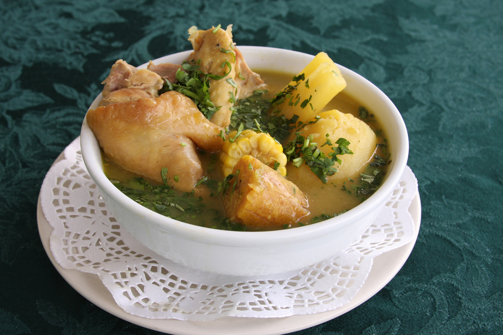
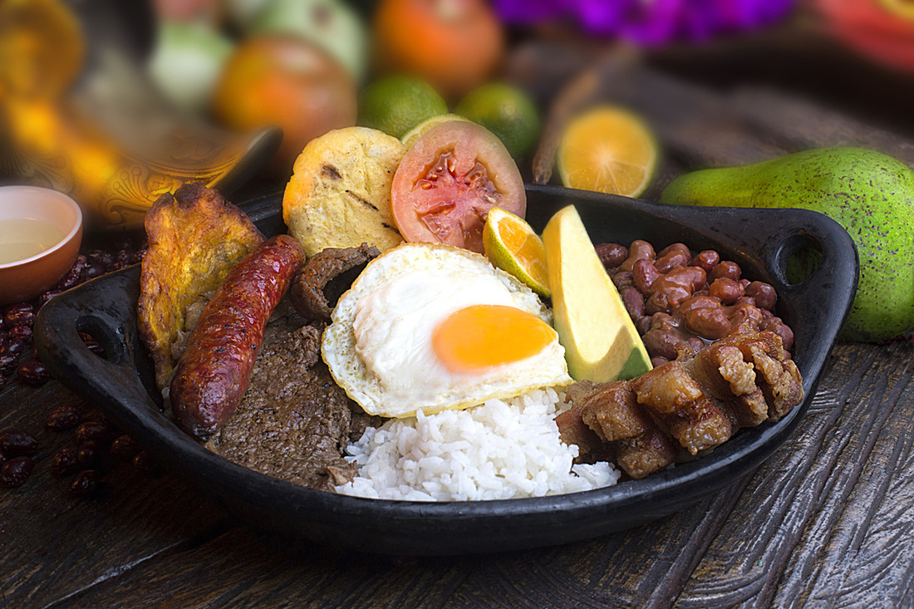

Sancocho, el mejor plato típico para disfrutar en familia
Agosto 10/2017

Preparación:
Quítale las cáscaras a las papas y córtalas en varias porciones. Pela los plátanos y pártelos en trozos usando tus manos, pues dicen las abuelas, que así el sancocho espesa mucho más.
Continúa pelando y cortando la yuca; haz lo mismo con la mazorca y pica los dientes de ajo y la cebolla cabezona.
Alista una olla grande y añade el cilantro, la cebolla cabezona, la cebolla larga, el ajo y las presas de pollo. Añade agua en la olla, asegúrate de cubrir todos los ingredientes y llévala a fuego alto hasta el punto de ebullición.
Cuando lo anterior haya hervido, agrega a la misma olla los pedazos de plátano y deja que todo se cocine por 20 minutos.
Transcurrido ese tiempo, destapa la olla y con un utensilio retira la espuma, saca el cilantro y también el gajo de cebolla larga. Seguido a eso, añade las hojas de laurel, el comino, el color, la sal al gusto, la yuca, la papa, la mazorca y deja que todo se cocine por 30 minutos más. Te aconsejamos agregar un poco más de agua si ves que se ha ido secando la preparación.
Pincha con un tenedor los ingredientes que suelen ser los más duros. Si el tenedor los traspasa, eso quiere decir, que esta versión rápida de sancocho está lista para ser compartida y servida con un buen arroz, unas moneditas de plátano, cilantro, o con los alimentos que te gusten a ti y a tu familia.

¿La bandeja paisa es la comida colombiana?
Agosto 05/2017

Los cachacos dirán que no, que puede ser el ajiaco; los costeños defenderán el sancocho, los pastusos el cui, los vallunos la chuleta, los llaneros su mamona y los santandereanos la changua o la carne oreada, e incluso los vendedores de almuerzos corrientes dirán que es el ACPM (Arroz, Carne, Papa y Maduro).
Para el colombiano, la comida colombiana es la comida tradicional, autóctona, la que hacían las abuelas y que tienen largas historias por contar, como el buñuelo, el pan de bono, la arepa, el tamal (y sus variedades), la empanada e incluso la pega (o cucayo).
Eso no es comida colombiana, eso es comida típica colombiana. La diferencia es enorme y es parte del futuro de la gastronomía nacional en el futuro. La comida colombiana es la que es hecha a la colombiana, con la creatividad de nuestros chefs y no necesariamente con el peso de nuestra tradición.